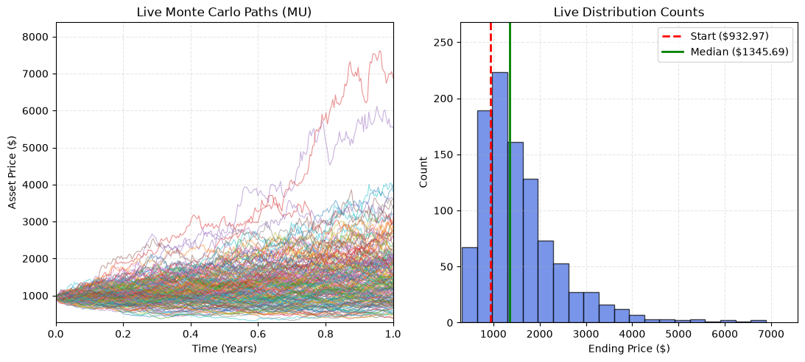
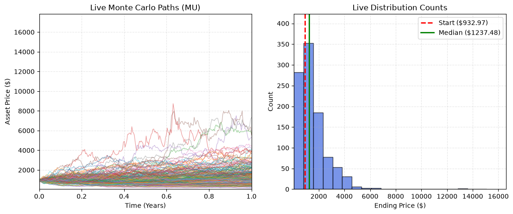

Fetching historical data for MU...
--- Model Calibration Parameters ---
Latest Stock Price (IAP) : $932.97
Calculated Annual Drift : 53.9698%
Calculated Volatility : 51.4363%
The main formula for the Geometric Brownian Motion (GBM) is: \[ dS_t = \mu S_t dt + \sigma S_t dW_t\] Where: \(S_t\) = Stock Price at time t \(\mu\) = expected annual return (drift) \(\sigma\) = annual volatility \(dt\) = small change in time \(dW_t\). = Brownian motion/random market shock
For our Monte Carlo Simulation our Equation becomes \[ S_{t+\Delta} = S_t exp[(\mu-\frac{1}{2}\sigma^2) \Delta t + \sigma \sqrt{ \Delta t }Z]\]
Where \[ Z \sim N(0,1) \]
Fetching historical data for MU...
--- Model Calibration Parameters ---
Latest Stock Price (IAP) : $932.97
Calculated Annual Drift : 53.9698%
Calculated Volatility : 51.4363%
The Heston model consists of two stochastic differential equations with a large amount of parameters compared to the GBM - Stock-price equation: \[ dS_t = \mu S_tdt + \sqrt{V_tS_tdW^S_t} \] - Variance equation \[ dV_t = \kappa(\theta-V_t)dt + \sigma \sqrt{V_tS_tdW^S_t} \] With two Brownian motions related by \[dW_t^S dW_t^V = pdt \]
Where: \(S_t\) = Stock price; \(V_t\) = instantaneous variance; \(\mu\) = expected return/drift; \(\kappa\) = speed of mean reversion in variance; \(\theta\) - long-run average variance; \(\sigma\) = volatility of variance, or vol-of-vol; \(p\) = correlation between stock-price and variance shocks; \(dW^S_t\) = Stock-price Brownian shock; and $dW^V_t $ = Variance Brownian shock
For the simulation, the stock-price equation becomes: \[S_{t+\Delta t} = S_t~exp[(\mu-\frac{1}{2}V_t)\Delta t + \sqrt{V_t \Delta t} Z^S_t] \] and the variance equation becomes: \[ V_{t+\Delta t} = V_t + \kappa(\theta-V_t)\Delta t + \sigma \sqrt{V_t\Delta t}Z^V_t\] With \[ Z^V_t = pZ^S_t + \sqrt{1-p^2}Z^2_t \] Where \(Z^s_t\) and \(Z^2_t\) are independent standard normal random variables
[*********************100%***********************] 1 of 1 completedFetching historical data for MU...
Latest Stock Price (IAP) : $932.97
Calculated mu value : 53.9698%
Calculated V0 Value : 94.4163%
Calculated theta Value : 26.5451%
Calculated kappa Value : 3.008
Calculated rho Value : -0.03404
Calculated sigma Value : 1.065
Feller condition : Satisfied